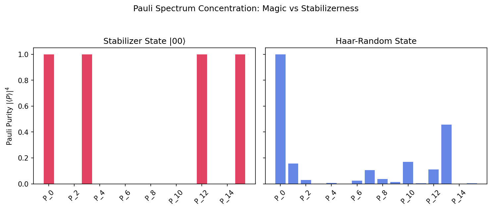
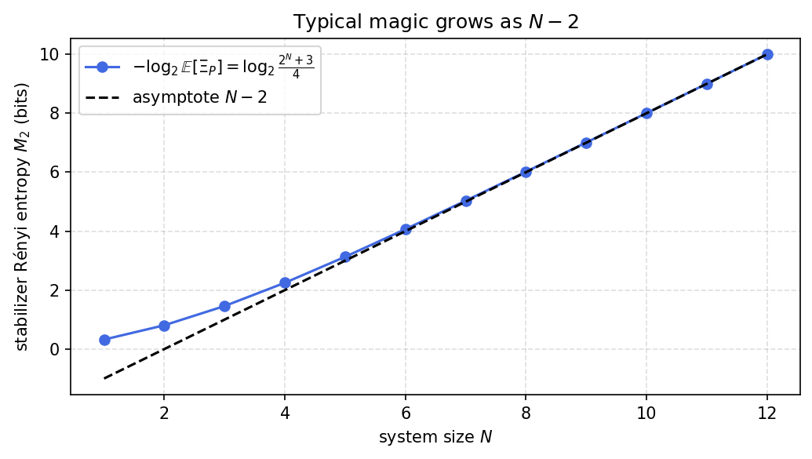

Clifford circuits acting on a computational basis state produce the stabilizer states, and the Gottesman-Knill theorem says these can be followed on an ordinary computer no matter how entangled they look. Any genuine quantum advantage therefore has to come from states that sit outside the stabilizer set, and the distance from that set is called magic, or nonstabilizerness. Quantifying it directly would mean minimizing over all stabilizer states, which is impractical, so a more workable handle reads the magic off the pattern of a state’s Pauli expectation values.
The stabilizer Renyi entropy builds on writing the density matrix \(|\psi\rangle\langle\psi|\) in the Pauli basis and treating the normalized fourth powers \(\langle P\rangle^4\) as a probability distribution over the \(4^N\) Pauli strings. The intuition is that a state with little magic concentrates its weight on a few Paulis, while a state full of magic smears that weight out broadly, and an entropy of the distribution captures the difference in one number.
A stabilizer state places weight \(\pm 1\) on exactly \(2^N\) Paulis and zero on the rest, so its distribution is as peaked as it can be and the second Renyi entropy \(M_2\) vanishes. A Haar-random state instead spreads its weight almost evenly, and a fourth-moment average over the Haar measure gives \(M_2 \approx N-2\), close to the most that \(N\) qubits can carry. Typical states are nearly as magical as the bound allows.
The calculation evaluates the Haar average of the Pauli purity with the symmetric-subspace projector for four copies, which gives \(\mathbb{E}[\Xi_P] = 4/(D+3)\) and hence \(M_2 = N - 2 + \mathcal{O}(2^{-N})\). The stabilizer value \(M_2 = 0\) then follows from a direct count. Magic comes out as typical under Haar randomness in the same way entanglement is, while the states a classical computer can keep up with carry none of it.
Motivation
Clifford circuits acting on computational basis states produce stabilizer states. By the Gottesman-Knill theorem, these states are efficiently classically simulable and thus contain no “quantum magic”. To achieve universal quantum computation (and true quantum chaos), non-Clifford resources (like T gates) are required.
The Stabilizer Rényi Entropy (SRE) quantifies this magic. It measures how “spread out” a state is in the Pauli basis. This exercise computes the second SRE \(M_2\) for Haar-random states, showing they are near-maximally magical, taking \(M_2 \approx N - 2\) bits of magic.
Preliminaries / Toolbox
1. Pauli decomposition: Any state \(|\psi\rangle\) can be written as \(|\psi\rangle\langle\psi| = \frac{1}{D} \sum_{P \in \mathcal{P}_N} \langle P\rangle P\), where \(\langle P\rangle = \langle \psi | P | \psi \rangle\) and \(\mathcal{P}_N\) is the set of \(D^2 = 4^N\) Pauli strings.
2. Stabilizer states: For a stabilizer state, exactly \(D\) Pauli strings have \(\langle P\rangle = \pm 1\), and the remaining \(D^2 - D\) have \(\langle P\rangle = 0\).
3. Stabilizer Rényi Entropy:\(M_2(\psi) = -\log_2 \Xi_P(\psi)\), where the Pauli purity is: \[
\Xi_P(\psi) = \frac{1}{D} \sum_{P \in \mathcal{P}_N} \langle P\rangle^4.
\]
4. The fourth-moment (4-copy) Weingarten formula: Over the Haar measure, \(\mathbb{E}[\langle\psi|A|\psi\rangle^4]\) projects onto the fully symmetric subspace of 4 copies.
Exercise
(a) Show \(\mathbb{E}_{\mathrm{Haar}}[\langle A\rangle^4] = \frac{3}{(D+1)(D+3)}\) for any traceless operator with \(A^2 = I\).
(b) Show \(\mathbb{E}[\Xi_P] = \frac{4}{D+3}\).
(c) Show \(-\log_2(\mathbb{E}[\Xi_P]) = N - 2 + \mathcal{O}(2^{-N})\).
(d) Verify that for a stabilizer state, \(\Xi_P = 1\) and \(M_2 = 0\).
Solution
Part (a): Fourth moment of a Pauli string
The 4th moment over the Haar measure projects \(A^{\otimes 4}\) onto the fully symmetric subspace of \(\mathcal{H}^{\otimes 4}\):
The dimension is \(\binom{D+3}{4} = D(D+1)(D+2)(D+3)/24\). The projector is \(\Pi_{\mathrm{sym}}^{(4)} = \frac{1}{24} \sum_{\pi \in S_4} P_\pi\).
\[
\mathrm{Tr}(A^{\otimes 4} P_\pi)
\] depends on the cycle structure of \(\pi\). Since \(A\) is traceless, any permutation with a 1-cycle gives \(\mathrm{Tr}(A) = 0\). Only two conjugacy classes survive:
3 products of two disjoint transpositions (e.g., \((12)(34)\)): \(\mathrm{Tr}(A^2)^2 = \mathrm{Tr}(I)^2 = D^2\).
A typical state has nearly the maximal possible magic (\(~N\) bits).
Part (d): Stabilizer states
If \(|\psi\rangle\) is a stabilizer state, it lies purely in a stabilizer group \(\mathcal{S}\). It has expectation \(+1\) or \(-1\) for the \(D = 2^N\) Paulis in \(\mathcal{S}\), and \(0\) for all others.
import numpy as npfrom scipy.stats import unitary_groupnp.random.seed(42) # reproducible MCfrom itertools import productpaulis = [np.eye(2), np.array([[0,1],[1,0]]), np.array([[0,-1j],[1j,0]]), np.array([[1,0],[0,-1]])]def all_paulis(N): ops = []for idxs in product(range(4), repeat=N): P = paulis[idxs[0]]for k inrange(1, N): P = np.kron(P, paulis[idxs[k]]) ops.append(P)return opsprint("Stabilizer Rényi Entropy of Haar Random States")print(f"{'N':>3s}{'D':>4s}{'E[⟨P⟩⁴] MC':>14s}{'3/((D+1)(D+3))':>16s}{'E[Ξ] MC':>12s}{'4/(D+3)':>12s}")print(f"{'─'*3:>3s}{'─'*4:>4s}{'─'*14:>14s}{'─'*16:>16s}{'─'*12:>12s}{'─'*12:>12s}")for N in [1, 2, 3]: D =2**N P_all = all_paulis(N) P_test = P_all[1] # A single non-identity Pauli P4_list, xi_list = [], []for _ inrange(20000): psi = unitary_group.rvs(D)[:, 0]# Part (a) P4_list.append( (psi.conj() @ P_test @ psi).real**4 )# Part (b) xi =sum((psi.conj() @ P @ psi).real**4for P in P_all) / D xi_list.append(xi) mc_P4 = np.mean(P4_list) th_P4 =3/((D+1)*(D+3)) mc_xi = np.mean(xi_list) th_xi =4/(D+3)print(f"{N:3d}{D:4d}{mc_P4:14.6f}{th_P4:16.6f}{mc_xi:12.6f}{th_xi:12.6f}")assertabs(mc_P4 - th_P4) <0.01assertabs(mc_xi - th_xi) <0.02# Part (d) Stabilizer statepsi_stab = np.zeros(4); psi_stab[0] =1# |00>P_all_2 = all_paulis(2)xi_stab =sum((psi_stab.conj() @ P @ psi_stab).real**4for P in P_all_2) /4print(f"\nStabilizer state |00⟩: Ξ = {xi_stab:.1f}, M₂ = {-np.log2(xi_stab):.1f} (expected 0.0)")
Stabilizer Rényi Entropy of Haar Random States
N D E[⟨P⟩⁴] MC 3/((D+1)(D+3)) E[Ξ] MC 4/(D+3)
─── ──── ────────────── ──────────────── ──────────── ────────────
import matplotlib.pyplot as plt# Generate a random state and a stabilizer state for N=2np.random.seed(42)N =2; D =4P_all = all_paulis(N)psi_haar = unitary_group.rvs(D)[:, 0]psi_stab = np.zeros(D); psi_stab[0] =1# |00>haar_spectrum = [(psi_haar.conj() @ P @ psi_haar).real**4for P in P_all]stab_spectrum = [(psi_stab.conj() @ P @ psi_stab).real**4for P in P_all]plt.rcParams['figure.dpi'] =150fig, (ax1, ax2) = plt.subplots(1, 2, figsize=(10, 4), sharey=True)x_labels = [f"P_{i}"for i inrange(len(P_all))]x = np.arange(len(P_all))ax1.bar(x, stab_spectrum, color='crimson', alpha=0.8)ax1.set_title("Stabilizer State |00⟩")ax1.set_ylabel(r"Pauli Purity $|\langle P\rangle|^4$")ax1.set_xticks(x[::2])ax1.set_xticklabels(x_labels[::2], rotation=45)ax2.bar(x, haar_spectrum, color='royalblue', alpha=0.8)ax2.set_title("Haar-Random State")ax2.set_xticks(x[::2])ax2.set_xticklabels(x_labels[::2], rotation=45)plt.suptitle("Pauli Spectrum Concentration: Magic vs Stabilizerness", y=1.05)plt.tight_layout()plt.show()

Code
%matplotlib inlineimport numpy as npimport matplotlib.pyplot as plt# Average magic of a Haar-random state vs system size, from E[Xi_P] = 4/(D+3).Ns = np.arange(1, 13)Ds =2.0**NsM2 =-np.log2(4/ (Ds +3)) # M_2 = log2((2^N + 3)/4)plt.figure(figsize=(7, 4))plt.plot(Ns, M2, 'o-', color='royalblue', label=r'$-\log_2\mathbb{E}[\Xi_P]=\log_2\frac{2^N+3}{4}$')plt.plot(Ns, Ns -2, 'k--', label=r'asymptote $N-2$')plt.xlabel('system size $N$')plt.ylabel(r'stabilizer Rényi entropy $M_2$ (bits)')plt.title('Typical magic grows as $N-2$')plt.legend()plt.grid(True, ls='--', alpha=0.4)plt.tight_layout()plt.show()

Takeaway
A Haar-random state carries close to \(N-2\) bits of magic, near the maximum, while a stabilizer state carries none. Its Pauli spectrum spreads almost uniformly, whereas a stabilizer state concentrates on \(D\) Paulis, so magic is typical under Haar randomness just as entanglement is.
References
Leone et al., Stabilizer Rényi entropy, Physical Review Letters (2022).
Veitch et al., The resource theory of stabilizer quantum computation, New Journal of Physics (2014).
Haug and Kim, Scalable measures of magic resource for quantum computers, PRX Quantum (2023).
Huang et al., A fast and exact approach for stabilizer Rényi entropy via the XOR-FWHT algorithm, arXiv preprint (2025). arXiv:2512.24685
Deeper mathematical background is given in the companion lecture notes: Płodzień, Information Scrambling, Quantum Chaos, and Haar-Random States (2025). arXiv:2511.14397